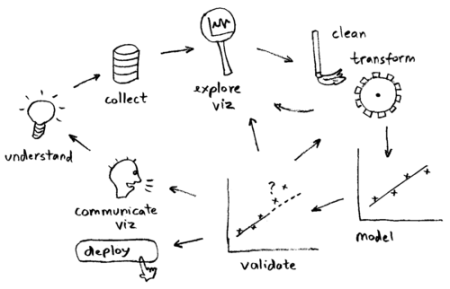
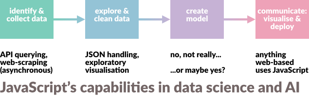
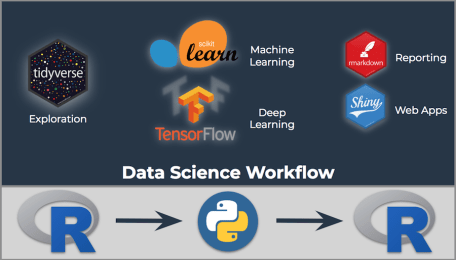

JavaScript in Data Science
Part 1: Getting Data
The data science workflow
Where does getting data fit in...

The data science workflow
Where does getting data fit in...
The data science workflow
Where does JavaScript fit in?
JavaScript isn't an end-to-end solution
The data science workflow
Where do R and Python fit in?
These aren't end-to-end solutions either...
A biased suggestion for multiple languages (but only Python and R...)
JavaScript likes the web:
...it is inherently asynchronous

Language popularity https://thenewstack.io/which-programming-languages-use-the-least-electricity/
About asynchronous coding
callbacks, promises and ... waiting
- callbacks are functions supplied to other functions
- promises are tidier
asyncandawaitmake code look synchronous
Promises can be combined with async/await, as in this tutorial
callbacks
A callback function is a function that is passed to another function as a parameter, and the callback function is called (or executed) inside the otherFunction. A callback function is essentially a pattern (an established solution to a common problem), and therefore, the use of a callback function is also known as a callback pattern.var friends = ["Mike", "Stacy", "Andy", "Rick"];
friends.forEach(function (eachName, index){
console.log(index + 1 + ". " + eachName); // 1. Mike, 2. Stacy, 3. Andy, 4. Rick
});